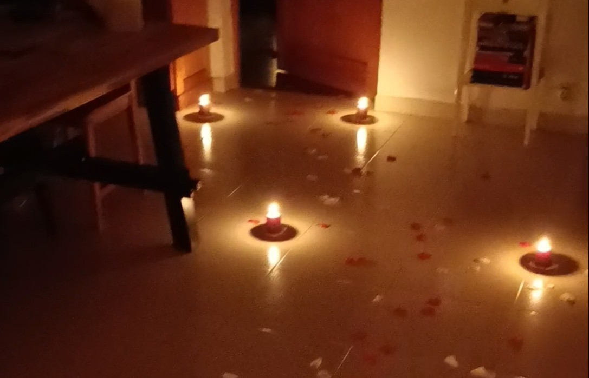
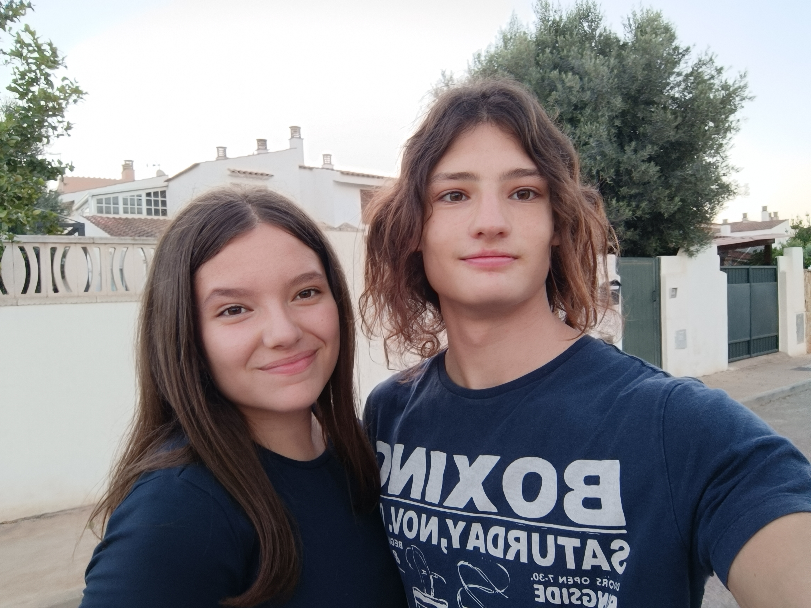

El reinicio
29 días, un vacío en nuestra relación que rellenó muchos agujeros.
No sé como describir lo que sentí todo ese tiempo, faltaba una gran parte de mí y no sabia como recuperarla.

Por eso decidimos que ese no podía ser el final. Nos enfrentábamos a un futuro incierto otra vez, sin saber si era correcto, pero con mas ganas que nunca.
